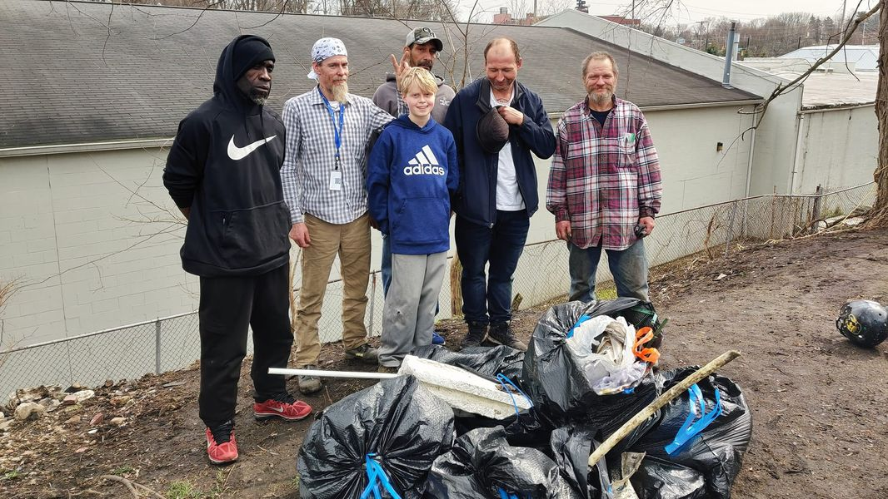

Mobile uploads
The young man in the middle of the picture here is named Theo. He is a Boy Scout. He needed to do a project to give back to community. He chose to come to our Garden and help pick up trash.
A man who once lived with us threw a great deal of junk over this very steep hill (mental illness manifests in many ways).
Theo, in true Boy Scout fashion, repelled down this hill and cleaned up all this trash.
The men behind him live with us. From left to right, their names are:
* Emo
* Dick Weed (he now has an apartment and job but spends a lot of time with us)
* I don't remember the man's name in the hat. I'm sorry.
* Rob
* Sully
I love this picture because how many of us have had the opportunity to be near this many homeless people? And if we don't take the time to meet the people in our cities who are experiencing a humanitarian crisis, how are we ever going to begin to move forward on this cause?
THANKS THEO!